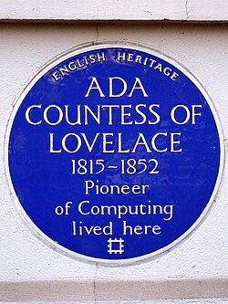

Память

В 1975 году Министерство обороны США приняло решение о начале разработки универсального языка программирования. Министр прочитал подготовленный секретарями исторический экскурс и без колебаний одобрил и проект, и предполагаемое название для будущего языка — «Ада». 10 декабря 1980 года был утверждён стандарт языка. В 2022 году NVIDIA выпустила графические процессоры с микроархитектурой Ada Lovelace. GPU с микроархитектурой «Ada Lovelace» дебютировали в линейке видеокарт серии GeForce RTX 40.